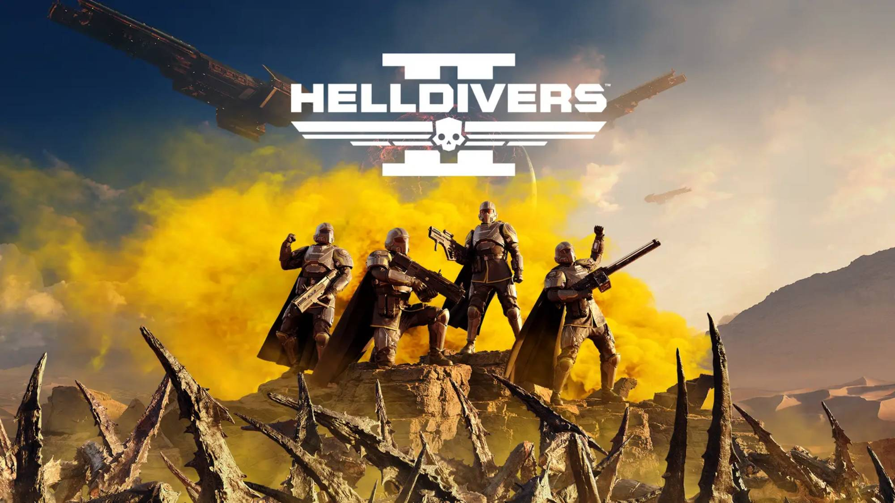
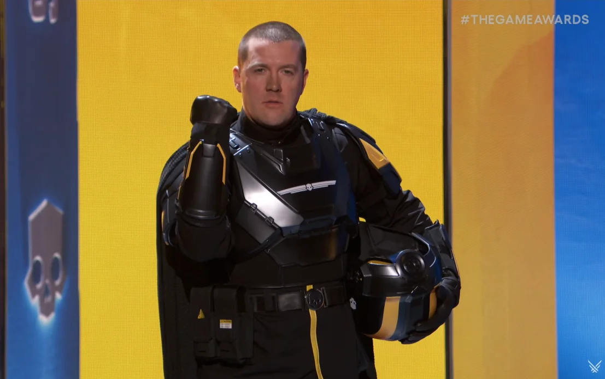
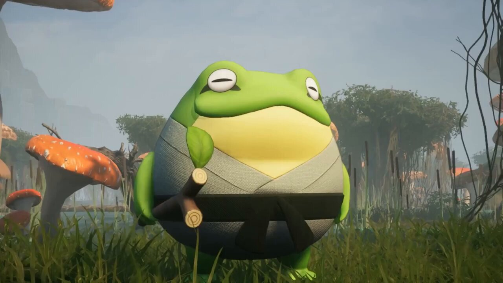

Helldivers 2
Helldivers 2 se desarrolla un siglo después del triunfo de "Super Tierra", una autodenominada democracia
administrada, sobre los Cíborgs (Cyborgs), Termínidos (Terminids) y Los Iluminados (The Illuminate) durante
los eventos del primer juego. Se descubre que, al morir, los Termínidos producen un recurso único y muy
valioso, el E-710. Se establecen granjas en mundos colonizados por humanos, pero finalmente se rompe la
contención, lo que libera a los insectos y provoca caos y destrucción. Al mismo tiempo, surge una nueva
amenaza en la forma de Autómatas, un ejército mecánico que intenta destruir a la humanidad. El título
comienza con un vídeo de reclutamiento de los Helldivers, que son tropas de choque de élite lanzadas desde
la órbita para reclamar las tierras colonizadas.12 La narración ambiental prevalece a lo largo del juego,
con varios registros, notas y mensajes de propaganda disponibles para que los jugadores los encuentren
durante el juego.
Video

Personaje favorito:

John Helldiver
Calificacion= 9/10
Palworld
Palworld (パルワールド Paruwārudo?) es un videojuego de acción y aventura de supervivencia del desarrollador
japonés Pocket Pair. El juego está ambientado en un mundo abierto poblado por criaturas parecidas a animales
conocidas como "Pals". Los jugadores pueden luchar y capturar a sus amigos para usarlos en la construcción
de bases, el recorrido y el combate. Palworld se puede jugar solo o en línea con hasta 32 jugadores en un
servidor. Anunciado en 2021, se lanzó a través de acceso anticipado para Windows, Xbox One y Xbox Series X/S
en enero de 2024 y en PlayStation 5 en septiembre de 2024.
Video

Personaje favorito

Croajiro:
Calificacion= 8.5/10
Marvel Rivals
Marvel Rivals es un videojuego de acción de disparos de héroes en tercera persona desarrollado y publicado
por NetEase Games en colaboración con Marvel Games. El juego se lanzó para Microsoft Windows, PlayStation 5
y Xbox Series X/S el 6 de diciembre de 2024. La acogida del público fue muy positiva. El juego es gratuito
con una alineación actual de 33 personajes de Marvel Comics y presenta juego cruzado en todas las
plataformas compatibles.
Video

Personaje favorito:

Dr. Strange
Calificacion= 8/10